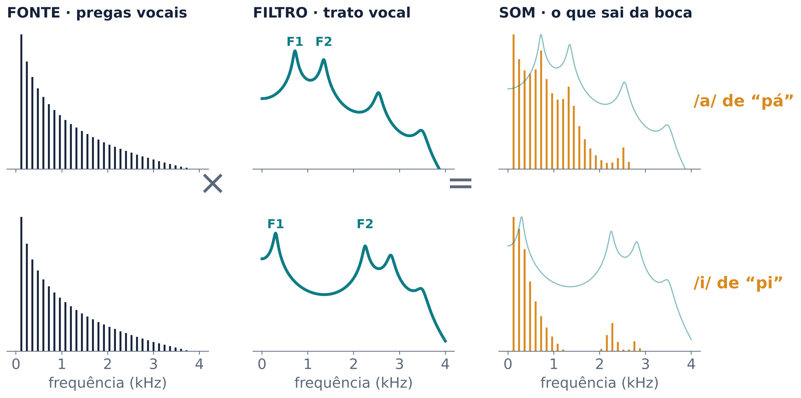
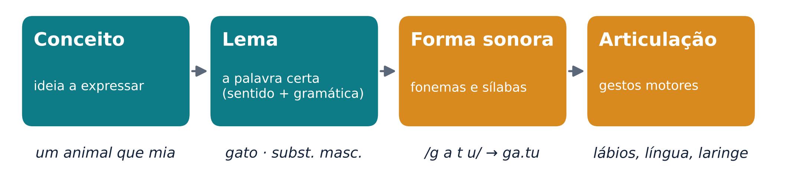
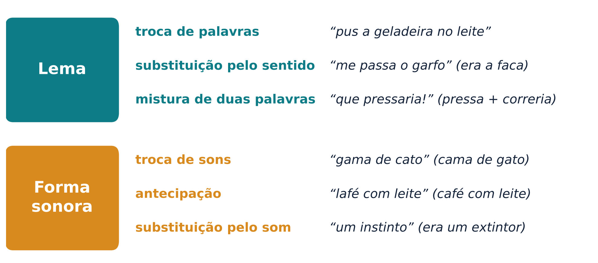
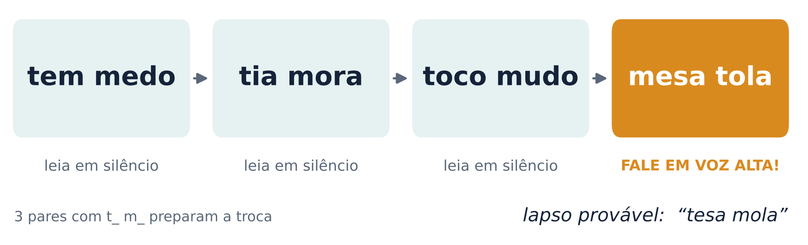
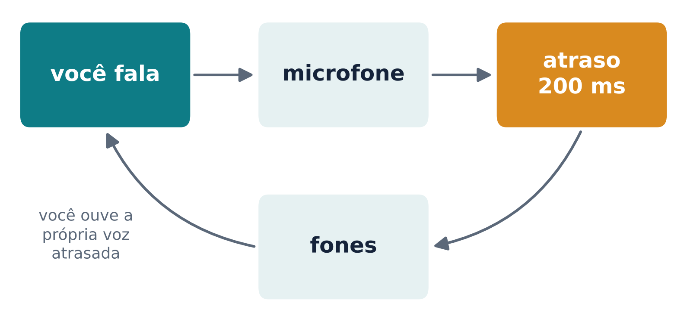
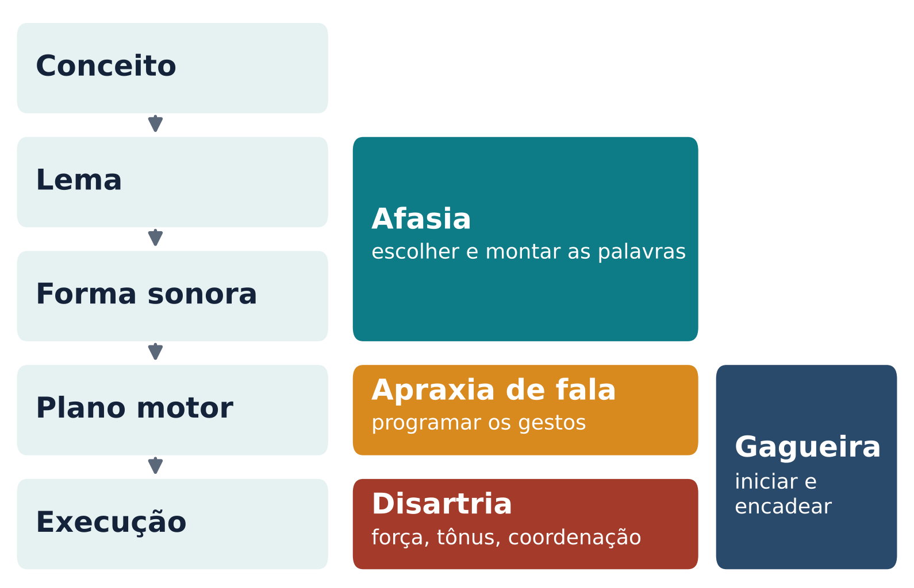

Da ideia ao movimento da boca: como o cérebro planeja, executa e confere cada palavra que dizemos
Na aula 3 seguimos o som do ouvido até o córtex. Hoje fazemos o caminho inverso: da ideia até o movimento que produz o som. Comecemos pelo corpo. Falar exige coordenar cerca de 100 músculos da respiração, da laringe e da boca, com uma precisão que quase nenhum outro movimento humano alcança (Guenther; Hickok, 2016; Bianchi; Simonyan, 2019). Vale separar três sistemas.
A maneira mais útil de pensar a voz é o modelo fonte–filtro, cuja formulação clássica é de Gunnar Fant (Fant, 1960; Kriengwatana; Beckers, 2019). O som produzido na laringe é a fonte. Ele passa por um conjunto de filtros, formado pelos articuladores e pelas cavidades acima da laringe, que lhe dão a forma final (Mildner, 2008). A vibração das pregas vocais produz uma frequência fundamental (F0, que ouvimos como a altura da voz) e harmônicos, que são múltiplos dela. O trato vocal decide quais harmônicos saem mais fortes. As faixas reforçadas aparecem no espectrograma como concentrações de energia chamadas formantes, numeradas F1, F2, F3 a partir da mais grave (Binder, 2016). As posições de F1 e F2 são as que melhor distinguem as vogais (Mildner, 2008).

Como regra prática, F1 depende do grau de constrição feito pela língua, que acompanha a altura da língua; F2 depende de onde fica essa constrição, e sobe quando ela se aproxima dos lábios. Os próprios autores lembram que essas regras são aproximadas (Guenther; Hickok, 2016). Diga “i-a-u” devagar: no /a/ a boca abre e a língua desce; no /i/ a língua vai para a frente e para cima; no /u/ ela recua. A Figura 1 mostra a consequência: o /a/ tem F1 mais alto que o /i/, e o /i/ tem F2 bem mais alto que o /a/.
A grande vantagem do modelo é separar duas coisas que ouvimos juntas. A fonte define a altura e a qualidade da voz; o filtro define a vogal. Por isso reconhecemos o mesmo “a” numa voz grave ou aguda. No sussurro, as pregas vocais nem vibram, e mesmo assim a mensagem continua compreensível (Kriengwatana; Beckers, 2019). É o que o experimento 1 do laboratório permite testar com o dedo.
Os músculos da fala são comandados por nervos cranianos, que saem do tronco encefálico (Tremblay; Deschamps; Gracco, 2016). O trigêmeo (V) move a mandíbula; o facial (VII), os músculos da face, incluindo os lábios; o glossofaríngeo (IX) e o vago (X), a faringe e a laringe; o hipoglosso (XII), a língua (Mildner, 2008). Os neurônios motores da laringe ficam no núcleo ambíguo, no tronco encefálico (Bianchi; Simonyan, 2019). Guarde esse nome: ele volta na seção 7.
Acima do tronco encefálico, o comando parte do córtex motor primário, no giro pré-central. Nos anos 1930, Penfield e colegas estimularam esse giro com pequenas correntes elétricas durante neurocirurgias e montaram um mapa do corpo, o famoso homúnculo. Na parte de baixo do giro, a estimulação produzia sons vocálicos prolongados (“ahhh”), numa região que se sobrepunha à dos lábios e da língua (Bianchi; Simonyan, 2019).
Registros mais finos, feitos com eletrodos colocados diretamente sobre o córtex (eletrocorticografia), refinaram esse mapa. Bouchard e colegas (2013) mediram a atividade dos diferentes articuladores e encontraram duas regiões ligadas à laringe, uma dorsal e outra ventral (Bianchi; Simonyan, 2019). Esses mapas variam de pessoa para pessoa e se sobrepõem bastante: não há um “ponto” para cada músculo.
Um detalhe clínico importante: os núcleos motores do tronco encefálico que comandam a fala, com exceção do núcleo facial, recebem projeções importantes do córtex dos dois hemisférios. Por isso, uma lesão restrita a um hemisfério costuma causar um problema de fala leve e passageiro, enquanto lesões dos dois lados podem causar um distúrbio grave e persistente (Ziegler; Staiger, 2016).
O córtex motor não trabalha sozinho (Guenther; Hickok, 2016; Tremblay; Deschamps; Gracco, 2016):
Não existe um “centro da fala”. Existe um circuito: córtex frontal e motor, área motora suplementar, núcleos da base, cerebelo, tálamo e tronco encefálico, em contato constante com o córtex auditivo e somatossensorial (Guenther; Hickok, 2016). Cada parte contribui com algo diferente, e uma lesão em cada parte produz um problema diferente.
Antes de mover a boca é preciso saber o que dizer e montar a sequência de sons. O modelo mais influente dessa preparação é o de Willem Levelt (Levelt, 1989; Levelt; Roelofs; Meyer, 1999). Ele divide a fala em três grandes processos: conceituação (montar a mensagem), formulação (escolher as palavras e montar a frase e seus sons) e articulação (executar o plano), com um automonitoramento que acompanha tudo (Roelofs; Ferreira, 2019).
Para uma palavra só, o caminho tem quatro passos (Figura 2):

O ponto central do modelo é a separação entre o lema (sentido e gramática) e a forma (os sons). Essa separação veio primeiro do comportamento: dos lapsos e da ponta da língua, que veremos na seção 4 (Dell; Jacobs, 2016).
No paradigma de interferência figura–palavra, a pessoa nomeia uma figura (um gato) tentando ignorar uma palavra escrita ou falada. Quando a palavra é do mesmo campo de sentido (“cachorro”), a nomeação fica mais lenta do que quando não tem relação (“caneta”). Para uns, o lema de “cachorro”, já ativado pela figura, compete com o lema certo. Outros pesquisadores negam que a escolha seja por competição, e o debate continua (Roelofs; Ferreira, 2019).
Na versão original de Levelt, a forma sonora só era ativada depois que o lema era escolhido (Dell; Jacobs, 2016). Gary Dell propôs um modelo em que a ativação também volta dos sons para as palavras (Dell, 1986). Dois fatos favorecem essa volta: os erros mistos, parecidos com a palavra certa no sentido e no som ao mesmo tempo (“rato” no lugar de “gato”), são mais comuns do que o acaso prevê; e as trocas de sons formam palavras reais com mais frequência do que deveriam, o viés lexical. Os defensores de Levelt respondem que parte desses vieses vem do automonitoramento. Hoje até o modelo de Levelt aceita que a ativação passe em cascata para as formas antes de o lema ser escolhido (Roelofs; Ferreira, 2019). Os dois lados concordam no essencial: existe um passo para a palavra e outro para os sons.
Uma meta-análise de estudos de imagem, feita por Indefrey e Levelt, propôs um “endereço” para cada etapa: conceitos no lobo temporal anterior e ventral; lemas na porção média do giro temporal médio esquerdo; formas sonoras no temporal superior e médio posterior (área de Wernicke); fonemas na parte posterior do giro frontal inferior (área de Broca); e programas motores das sílabas no giro pré-central ventral (Roelofs; Ferreira, 2019). Medidas de magnetoencefalografia mostram que, ao nomear uma figura, a atividade leva algumas centenas de milissegundos para ir do córtex occipitotemporal, passando pelo temporal médio, até as áreas frontais e pré-centrais. Há quem defenda que as etapas correm mais em paralelo; o debate está aberto (Roelofs; Ferreira, 2019).
Gregory Hickok resume a organização cerebral em níveis hierárquicos: o acesso léxico-semântico envolve regiões temporais médias e o giro frontal inferior; o nível fonológico, o temporal superior posterior e regiões vizinhas; a articulação, o córtex sensório-motor (Hickok, 2019). Uma peça-chave é a área Spt, no fundo da fissura lateral, na fronteira entre os lobos temporal e parietal. Ela é ativada tanto quando ouvimos fala quanto quando a produzimos em silêncio, e funciona como interface entre o som e o movimento (Hickok, 2019). É a mesma via dorsal da aula 3: a produção reaproveita a rede da percepção.
Os lapsos parecem acidentes, mas seguem regras. Victoria Fromkin mostrou, analisando coleções de lapsos, que eles revelam unidades que a linguística descreve: traços dos sons, morfemas, regras fonológicas (Fromkin, 1971). Os lapsos caem em dois grupos, que correspondem às duas etapas do modelo (Dell; Jacobs, 2016):

Um exemplo clássico em inglês mostra a separação entre os níveis: “how many pies does it take to make an apple?” (“quantas tortas são necessárias para fazer uma maçã?”). Pie e apple trocaram de lugar, mas a marca de plural ficou na posição original e foi parar em pie. A palavra e sua flexão gramatical são encaixadas em momentos diferentes (Roelofs; Ferreira, 2019).

Esperar lapsos espontâneos é lento. Bernard Baars, Michael Motley e Donald MacKay usaram uma técnica para provocá-los: a pessoa diz em voz alta um par-alvo (“mesa tola”) logo depois de pares de “preparação” que contêm os sons iniciais da troca (Figura 4). Às vezes sai “tesa mola”. Com essa técnica, eles mostraram que trocas que formam palavras reais saem mais do que trocas que formam não-palavras, quando o contexto tem palavras reais. A interpretação foi que um processo de edição barra as não-palavras antes da fala (Baars; Motley; MacKay, 1975).
Essa edição é o automonitoramento, e há evidências de que ele age antes da fala sair. O intervalo entre um erro e sua interrupção pode ser de só 100 a 150 ms, curto demais para que a pessoa tenha ouvido a própria voz. E, quando os lapsos induzidos formariam palavrões, eles são mais raros, mas a resposta galvânica da pele (um sinal de alerta do corpo) aumenta, como se o erro tivesse sido detectado e barrado por dentro (Roelofs; Ferreira, 2019).
Você sabe o que quer dizer, tem certeza de que conhece a palavra, mas ela não sai. Roger Brown e David McNeill provocaram centenas desses estados lendo para estudantes definições de palavras pouco frequentes. Nesse estado, as pessoas sabiam algumas letras da palavra, sobretudo do início, e o número de sílabas (Brown; McNeill, 1966). No modelo de duas etapas, a ponta da língua é ficar preso entre os passos: o lema foi encontrado, mas a forma não chegou inteira (Dell; Jacobs, 2016). Falantes de italiano nesse estado conseguem dizer o gênero gramatical da palavra que não sai, uma informação do lema (Vigliocco; Antonini; Garrett, 1997).
A separação também tem endereço no cérebro. Myrna Schwartz e colegas compararam as lesões de 64 pessoas com afasia (distúrbio de linguagem causado por lesão cerebral) com os erros de sentido que elas cometiam ao nomear figuras (dizer “cachorro” para um gato). A associação mais forte apareceu no lobo temporal anterior esquerdo (Schwartz et al., 2009). Já a etapa dos sons se associou a lesões numa via mais dorsal, no córtex frontoparietal esquerdo, incluindo os giros pós-central e supramarginal (Schwartz; Dell, 2016).
Depois de planejar e executar, o cérebro confere o resultado. Sem audição, como na surdez de nascença, a fala não se desenvolve normalmente. Adultos que ficam surdos continuam inteligíveis por anos, mas os contrastes entre seus sons vão diminuindo (Guenther; Hickok, 2016).
Frank Guenther e colegas construíram o DIVA, um modelo de rede neural em que cada componente corresponde a uma região do cérebro (Guenther; Hickok, 2016). Ele tem dois sistemas de controle:
O modelo também explica o aprendizado. No balbucio, o bebê aprende como os comandos se transformam em sons. Depois, ao imitar as sílabas da sua língua, o retorno corrige cada tentativa, e o comando de antecipação melhora a cada repetição. Quando o programa está bem aprendido, a antecipação basta, e o retorno só entra em ação se algo sai do esperado (Guenther; Hickok, 2016).
Para testar o controle por retorno, os pesquisadores alteram a voz da pessoa em tempo real e a devolvem pelo fone. John Houde e Michael Jordan alteraram a vogal que os participantes ouviam, e eles passaram a ajustar a produção para compensar; o ajuste se generalizou para outros contextos e outras vogais (Houde; Jordan, 1998). Essa compensação é automática e em grande parte inconsciente (Guenther; Hickok, 2016). Jason Tourville e colegas, com ressonância magnética funcional, deslocaram o F1 em 30% para cima ou para baixo em tentativas sorteadas. A fala alterada ativou mais o temporal superior posterior dos dois lados e o córtex frontal direito, como o DIVA previa (Tourville; Reilly; Guenther, 2008; Guenther; Hickok, 2016).
O córtex auditivo também responde menos à própria voz enquanto falamos do que à gravação da mesma fala (Houde et al., 2002). Os autores interpretam isso como um ajuste do córtex auditivo ao som esperado. Em saguis, neurônios do córtex auditivo são suprimidos durante as próprias vocalizações, e essa supressão os deixa mais sensíveis a alterações do retorno (Eliades; Wang, 2008).
A manipulação mais antiga é atrasar a voz. Ouvir a própria fala com atraso pode deixá-la mais lenta e até provocar disfluências, como repetições, em quem não tem nenhum problema de fala (Lee, 1951; Watkins; Chesters; Connally, 2016). O experimento 4 do laboratório faz algo parecido com as batidas das mãos, e a demonstração em sala mostra o efeito na fala (Figura 5).

Como a fala depende de várias etapas e de um circuito extenso, os distúrbios variam conforme o elo que falha (Figura 6).

A gagueira do desenvolvimento é um distúrbio da fluência: repetições, prolongamentos e bloqueios, sobretudo no começo das palavras e frases. Quem gagueja sabe o que quer dizer, mas tem dificuldade de avançar na sequência de sons. Ela surge entre 2 e 4 anos e atinge cerca de 1 em cada 20 crianças; a maioria se recupera, e cerca de 1% dos adultos continua gaguejando, com quatro ou cinco homens para cada mulher. Estudos com gêmeos atribuem cerca de 70% da variação no risco a fatores genéticos (Watkins; Chesters; Connally, 2016).
Nos estudos de imagem aparecem hiperatividade do frontal inferior direito e do cerebelo, menor atividade do córtex auditivo e alterações nos núcleos da base; um achado estrutural confiável é a menor integridade da substância branca sob o córtex sensório-motor esquerdo, perto da fissura lateral (Watkins; Chesters; Connally, 2016). Um fato intrigante ajuda a pensar o mecanismo: a gagueira desaparece ao cantar e diminui ao falar em coro, com metrônomo ou com retorno auditivo alterado. Uma hipótese é que a saída dos núcleos da base para a AMS falha em dar o sinal de tempo para iniciar o próximo som, e o coro e o metrônomo fornecem esse sinal de fora (Watkins; Chesters; Connally, 2016; Guenther; Hickok, 2016).
Na família britânica conhecida como KE, cerca de metade dos membros, ao longo de três gerações, tem apraxia de fala na infância (Morgan, 2019). Cecilia Lai e colegas encontraram a causa: uma mutação no gene FOXP2 (Lai et al., 2001), que codifica um fator de transcrição, uma proteína que regula a atividade de outros genes (Morgan, 2019). FOXP2 não é “o gene da linguagem”. O caso mostra que alterar o desenvolvimento do sistema motor da fala basta para comprometer a fala.
Macacos vocalizam muito, mas não aprendem sons novos nem controlam a voz como nós. Por quê?
Uwe Jürgens propôs que existem duas vias para a vocalização (Jürgens, 2002; Ziegler; Staiger, 2016). A primeira vai do córtex cingulado anterior à substância cinzenta periaquedutal, no mesencéfalo, e daí à formação reticular e aos núcleos motores. Ela produz as vocalizações inatas: choro, gemido, riso. A segunda parte do córtex motor e permite a fala e o canto (Bianchi; Simonyan, 2019). Em humanos, as duas se dissociam: pessoas com lesões dos dois lados do córtex motor podem perder a fala e, mesmo assim, rir e chorar espontaneamente (Ziegler; Staiger, 2016).
Os macacos não são, porém, escravos dos seus chamados. Macacos rhesus treinados vocalizam em resposta a um sinal visual, e neurônios do córtex pré-frontal ventrolateral, numa região considerada homóloga da área de Broca, disparam antes dessas vocalizações (Hage; Nieder, 2013). O córtex controla quando vocalizar, mas os macacos não aprendem a produzir padrões vocais novos (Fischer; Hage, 2019).
Uma diferença anatômica pode explicar parte disso. Em humanos, o córtex motor da laringe parece enviar fibras diretamente ao núcleo ambíguo, como sugeriram estudos anatômicos clássicos (Kuypers, 1958); em outros primatas, essa ligação passa antes pela formação reticular. As evidências humanas ainda vêm de poucos estudos (Bianchi; Simonyan, 2019). Em aves que aprendem o canto, como os pássaros canoros, existe uma projeção direta parecida, do prosencéfalo aos neurônios que comandam o órgão vocal, ausente em aves que não aprendem seus sons. Daí a hipótese de que uma via direta seja condição para o aprendizado vocal. Os mesmos autores notam que essa capacidade varia de forma gradual entre as espécies, e não como “tudo ou nada” (Petkov; Jarvis, 2012).
Uma ideia antiga dizia que os macacos não falam porque a garganta não permitiria produzir vogais variadas. Tecumseh Fitch e colegas testaram isso com imagens de raios X do trato vocal de macacos e concluíram que a incapacidade de falar não se deve à anatomia periférica (Fitch et al., 2016). O espaço de vogais do macaco é menor que o humano, mas basta para uma fala compreensível (de Boer, 2019). O limite está no cérebro.
Os saguis, pequenos macacos das Américas, mostram que o retorno social importa mesmo em primatas. Seus chamados mudam muito durante o desenvolvimento, e o retorno vocal dos pais, dado em resposta aos filhotes, acelera essa mudança (Takahashi et al., 2015). Filhotes com pouco retorno dos pais continuam a produzir padrões vocais infantis (Fischer; Hage, 2019). Não é aprendizado de sons novos, como na fala humana, mas mostra que a voz se desenvolve com o crescimento do corpo e com a interação com os outros.
Os cinco experimentos do Laboratório da Fala percorrem o caminho da aula. Os resultados de uma turma variam; o que importa é entender o que se espera e por quê.
Experimento 1 (triângulo das vogais). Ao arrastar o dedo, você mudava F1 e F2 do filtro, e a vogal mudava. Ao trocar a fonte (voz grave, aguda ou sussurro) com o mesmo filtro, a vogal se mantinha; sem o filtro, sobrava um zumbido sem vogal. É o modelo fonte–filtro em ação: a vogal está no filtro (Mildner, 2008). No nosso sintetizador simples, o /u/ soa abafado e costuma ser o mais difícil de achar.
Experimento 2 (lapsos induzidos). A técnica é a de Baars, Motley e MacKay (1975). Cada pessoa comete poucos lapsos; somando a turma, espera-se mais trocas nos pares em que o resultado forma palavras (“tesa mola”) do que naqueles em que forma não-palavras (“nubo tave”). Essa diferença é o viés lexical, que pode vir do automonitoramento ou da interação entre os níveis de palavra e de som (Roelofs; Ferreira, 2019). Se você percebeu o erro no meio e corrigiu, viu o monitoramento funcionando. Uma limitação: as respostas eram autorrelatadas, e trocas parciais passam despercebidas.
Experimento 3 (ponta da língua). Espera-se que algumas definições tenham deixado a palavra “na ponta da língua” e que, nesses casos, a primeira letra e o número de sílabas sejam acertados com frequência (Brown; McNeill, 1966). Você sabia o sentido e tinha certeza de conhecer a palavra (o lema), mas a forma chegou em pedaços (Dell; Jacobs, 2016).
Experimento 4 (batidas com retorno atrasado). Com o clique atrasado, o ritmo tende a ficar mais irregular ou mais lento, porque o que você ouve não bate com o que você fez. O efeito nas batidas pode ser pequeno. Na fala, o atraso deixa a fala mais lenta e provoca disfluências (Lee, 1951; Watkins; Chesters; Connally, 2016).
Experimento 5 (classifique o lapso). Separar erros de palavra e de som é, em geral, fácil, porque eles seguem regularidades diferentes (Roelofs; Ferreira, 2019). Os casos difíceis são instrutivos: “um instinto” no lugar de “um extintor” parece um erro de palavra, mas a palavra que entrou foi escolhida pelo som parecido, não pelo sentido.
Uma pessoa diz “a” em voz normal e depois sussurrando. Por que reconhecemos a mesma vogal nos dois casos?
Resposta
Pelo modelo fonte–filtro, a vogal é definida pelo filtro (a forma do trato vocal, que determina os formantes), não pela fonte. No sussurro a fonte muda (ruído de ar em vez da vibração das pregas vocais), mas a boca mantém a mesma forma, e por isso F1 e F2 ficam nas mesmas posições.
Por que uma lesão no córtex motor de um só hemisfério costuma causar apenas um problema de fala leve, enquanto lesões nos dois lados podem tirar a fala?
Resposta
Quase todos os núcleos motores do tronco encefálico que comandam a fala recebem projeções do córtex dos dois hemisférios. Se um lado é lesado, o outro ainda envia comandos. Quando os dois lados são lesados, essa compensação desaparece.
Que evidências comportamentais sustentam a separação entre lema e forma sonora?
Resposta
Os lapsos se dividem em erros de palavra (trocas de palavras inteiras da mesma classe gramatical) e erros de som (trocas de fonemas entre palavras vizinhas), com regras diferentes. Na ponta da língua, a pessoa sabe o sentido e às vezes o gênero gramatical da palavra, mas só recupera partes da forma, como as primeiras letras.
No experimento 2, por que as trocas que formam palavras reais tendem a ser mais frequentes? Dê as duas explicações em debate.
Resposta
Uma é o automonitoramento: o falante confere o plano antes de falar e barra mais facilmente as não-palavras. A outra é a interação entre níveis (modelo de Dell): a ativação volta dos sons para as palavras e favorece saídas que correspondem a palavras conhecidas.
Segundo o modelo DIVA, o que acontece quando ouvimos a própria voz com o F1 deslocado?
Resposta
O som que chega deixa de coincidir com o alvo auditivo previsto. Áreas do temporal superior posterior detectam o erro e enviam um sinal ao córtex pré-motor direito, que gera um comando corretivo. A pessoa ajusta a articulação para compensar, em geral sem perceber.
Uma paciente tem fala lenta e arrastada em todas as palavras, com voz fraca. Outra faz erros diferentes a cada tentativa de dizer a mesma palavra, tateia com a boca e percebe os erros. Qual delas tem disartria e qual tem apraxia de fala?
Resposta
A primeira tem disartria: o problema está na execução (força e coordenação) e afeta a fala de forma constante. A segunda tem apraxia de fala: os músculos funcionam, mas o planejamento dos gestos falha, o que gera erros inconsistentes e tateio.
Por que o resultado de Fitch e colegas sobre o trato vocal de macacos é importante para a pergunta “por que só nós falamos”?
Resposta
Ele enfraquece a explicação puramente anatômica. Se o aparelho periférico permitiria uma fala compreensível, a diferença deve estar no controle neural, por exemplo na ligação direta do córtex motor com os neurônios da laringe, que os humanos parecem ter e os outros primatas não.
BAARS, B. J.; MOTLEY, M. T.; MacKAY, D. G. Output editing for lexical status in artificially elicited slips of the tongue. Journal of Verbal Learning and Verbal Behavior, v. 14, n. 4, p. 382-391, 1975. DOI: https://doi.org/10.1016/S0022-5371(75)80017-X.
BIANCHI, S.; SIMONYAN, K. The speech-ready organization of the motor cortex. In: HAGOORT, P. (org.). Human language: from genes and brains to behavior. Cambridge, MA: MIT Press, 2019. p. 499-508.
BINDER, J. R. Phoneme perception. In: HICKOK, G.; SMALL, S. L. (org.). Neurobiology of language. London: Academic Press, 2016. p. 447-461. DOI: https://doi.org/10.1016/B978-0-12-407794-2.00037-7.
BOUCHARD, K. E.; MESGARANI, N.; JOHNSON, K.; CHANG, E. F. Functional organization of human sensorimotor cortex for speech articulation. Nature, v. 495, n. 7441, p. 327-332, 2013. DOI: https://doi.org/10.1038/nature11911.
BROWN, R.; McNEILL, D. The “tip of the tongue” phenomenon. Journal of Verbal Learning and Verbal Behavior, v. 5, n. 4, p. 325-337, 1966. DOI: https://doi.org/10.1016/S0022-5371(66)80040-3.
DE BOER, B. Speech perception and production. In: HAGOORT, P. (org.). Human language: from genes and brains to behavior. Cambridge, MA: MIT Press, 2019. p. 265-276.
DELL, G. S. A spreading-activation theory of retrieval in sentence production. Psychological Review, v. 93, n. 3, p. 283-321, 1986. DOI: https://doi.org/10.1037/0033-295X.93.3.283.
DELL, G. S.; JACOBS, C. L. Successful speaking: cognitive mechanisms of adaptation in language production. In: HICKOK, G.; SMALL, S. L. (org.). Neurobiology of language. London: Academic Press, 2016. p. 209-219. DOI: https://doi.org/10.1016/B978-0-12-407794-2.00018-3.
DRONKERS, N. F. A new brain region for coordinating speech articulation. Nature, v. 384, n. 6605, p. 159-161, 1996. DOI: https://doi.org/10.1038/384159a0.
ELIADES, S. J.; WANG, X. Neural substrates of vocalization feedback monitoring in primate auditory cortex. Nature, v. 453, n. 7198, p. 1102-1106, 2008. DOI: https://doi.org/10.1038/nature06910.
FANT, G. Acoustic theory of speech production. The Hague: Mouton, 1960.
FISCHER, J.; HAGE, S. R. Primate vocalization as a model for human speech: scopes and limits. In: HAGOORT, P. (org.). Human language: from genes and brains to behavior. Cambridge, MA: MIT Press, 2019. p. 639-656.
FITCH, W. T. et al. Monkey vocal tracts are speech-ready. Science Advances, v. 2, n. 12, e1600723, 2016. DOI: https://doi.org/10.1126/sciadv.1600723.
FROMKIN, V. A. The non-anomalous nature of anomalous utterances. Language, v. 47, n. 1, p. 27-52, 1971. DOI: https://doi.org/10.2307/412187.
GUENTHER, F. H.; HICKOK, G. Neural models of motor speech control. In: HICKOK, G.; SMALL, S. L. (org.). Neurobiology of language. London: Academic Press, 2016. p. 725-740. DOI: https://doi.org/10.1016/B978-0-12-407794-2.00058-4.
HAGE, S. R.; NIEDER, A. Single neurons in monkey prefrontal cortex encode volitional initiation of vocalizations. Nature Communications, v. 4, 2409, 2013. DOI: https://doi.org/10.1038/ncomms3409.
HICKOK, G. Functional anatomy of speech production: from words to motor control. In: HAGOORT, P. (org.). Human language: from genes and brains to behavior. Cambridge, MA: MIT Press, 2019. p. 381-392.
HILLIS, A. E. et al. Re-examining the brain regions crucial for orchestrating speech articulation. Brain, v. 127, n. 7, p. 1479-1487, 2004. DOI: https://doi.org/10.1093/brain/awh172.
HOUDE, J. F.; JORDAN, M. I. Sensorimotor adaptation in speech production. Science, v. 279, n. 5354, p. 1213-1216, 1998. DOI: https://doi.org/10.1126/science.279.5354.1213.
HOUDE, J. F. et al. Modulation of the auditory cortex during speech: an MEG study. Journal of Cognitive Neuroscience, v. 14, n. 8, p. 1125-1138, 2002. DOI: https://doi.org/10.1162/089892902760807140.
JÜRGENS, U. Neural pathways underlying vocal control. Neuroscience & Biobehavioral Reviews, v. 26, n. 2, p. 235-258, 2002. DOI: https://doi.org/10.1016/S0149-7634(01)00068-9.
KRIENGWATANA, B. P.; BECKERS, G. J. L. Speech perception: what do nonhuman animals have to say? In: HAGOORT, P. (org.). Human language: from genes and brains to behavior. Cambridge, MA: MIT Press, 2019. p. 701-712.
KUYPERS, H. G. J. M. Corticobulbar connexions to the pons and lower brain-stem in man: an anatomical study. Brain, v. 81, n. 3, p. 364-388, 1958. DOI: https://doi.org/10.1093/brain/81.3.364.
LAI, C. S. L. et al. A forkhead-domain gene is mutated in a severe speech and language disorder. Nature, v. 413, n. 6855, p. 519-523, 2001. DOI: https://doi.org/10.1038/35097076.
LEE, B. S. Artificial stutter. Journal of Speech and Hearing Disorders, v. 16, n. 1, p. 53-55, 1951. DOI: https://doi.org/10.1044/jshd.1601.53.
LEVELT, W. J. M. Speaking: from intention to articulation. Cambridge, MA: MIT Press, 1989. DOI: https://doi.org/10.7551/mitpress/6393.001.0001.
LEVELT, W. J. M.; ROELOFS, A.; MEYER, A. S. A theory of lexical access in speech production. Behavioral and Brain Sciences, v. 22, n. 1, p. 1-38, 1999. DOI: https://doi.org/10.1017/S0140525X99001776.
MILDNER, V. The cognitive neuroscience of human communication. New York: Lawrence Erlbaum Associates, 2008.
MORGAN, A. Deciphering genetics of speech-motor disorders. In: HAGOORT, P. (org.). Human language: from genes and brains to behavior. Cambridge, MA: MIT Press, 2019. p. 557-576.
PETKOV, C. I.; JARVIS, E. D. Birds, primates, and spoken language origins: behavioral phenotypes and neurobiological substrates. Frontiers in Evolutionary Neuroscience, v. 4, 12, 2012. DOI: https://doi.org/10.3389/fnevo.2012.00012.
ROELOFS, A.; FERREIRA, V. S. The architecture of speaking. In: HAGOORT, P. (org.). Human language: from genes and brains to behavior. Cambridge, MA: MIT Press, 2019. p. 35-50.
SCHWARTZ, M. F. et al. Anterior temporal involvement in semantic word retrieval: voxel-based lesion-symptom mapping evidence from aphasia. Brain, v. 132, n. 12, p. 3411-3427, 2009. DOI: https://doi.org/10.1093/brain/awp284.
SCHWARTZ, M. F.; DELL, G. S. Word production from the perspective of speech errors in aphasia. In: HICKOK, G.; SMALL, S. L. (org.). Neurobiology of language. London: Academic Press, 2016. p. 701-715. DOI: https://doi.org/10.1016/B978-0-12-407794-2.00056-0.
TAKAHASHI, D. Y. et al. The developmental dynamics of marmoset monkey vocal production. Science, v. 349, n. 6249, p. 734-738, 2015. DOI: https://doi.org/10.1126/science.aab1058.
TOURVILLE, J. A.; REILLY, K. J.; GUENTHER, F. H. Neural mechanisms underlying auditory feedback control of speech. NeuroImage, v. 39, n. 3, p. 1429-1443, 2008. DOI: https://doi.org/10.1016/j.neuroimage.2007.09.054.
TREMBLAY, P.; DESCHAMPS, I.; GRACCO, V. L. Neurobiology of speech production: a motor control perspective. In: HICKOK, G.; SMALL, S. L. (org.). Neurobiology of language. London: Academic Press, 2016. p. 741-750. DOI: https://doi.org/10.1016/B978-0-12-407794-2.00059-6.
VIGLIOCCO, G.; ANTONINI, T.; GARRETT, M. F. Grammatical gender is on the tip of Italian tongues. Psychological Science, v. 8, n. 4, p. 314-317, 1997. DOI: https://doi.org/10.1111/j.1467-9280.1997.tb00444.x.
WATKINS, K. E.; CHESTERS, J.; CONNALLY, E. L. The neurobiology of developmental stuttering. In: HICKOK, G.; SMALL, S. L. (org.). Neurobiology of language. London: Academic Press, 2016. p. 995-1004. DOI: https://doi.org/10.1016/B978-0-12-407794-2.00079-1.
ZIEGLER, W.; STAIGER, A. Motor speech impairments. In: HICKOK, G.; SMALL, S. L. (org.). Neurobiology of language. London: Academic Press, 2016. p. 985-994. DOI: https://doi.org/10.1016/B978-0-12-407794-2.00078-X.
Material de estudo da disciplina Bases neurais da comunicação humana (UFRN), Prof. Daniel Y. Takahashi. Texto e figuras elaborados para o curso; as fontes estão nas Referências.